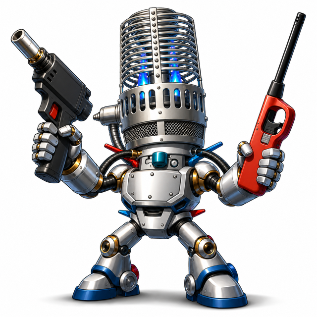
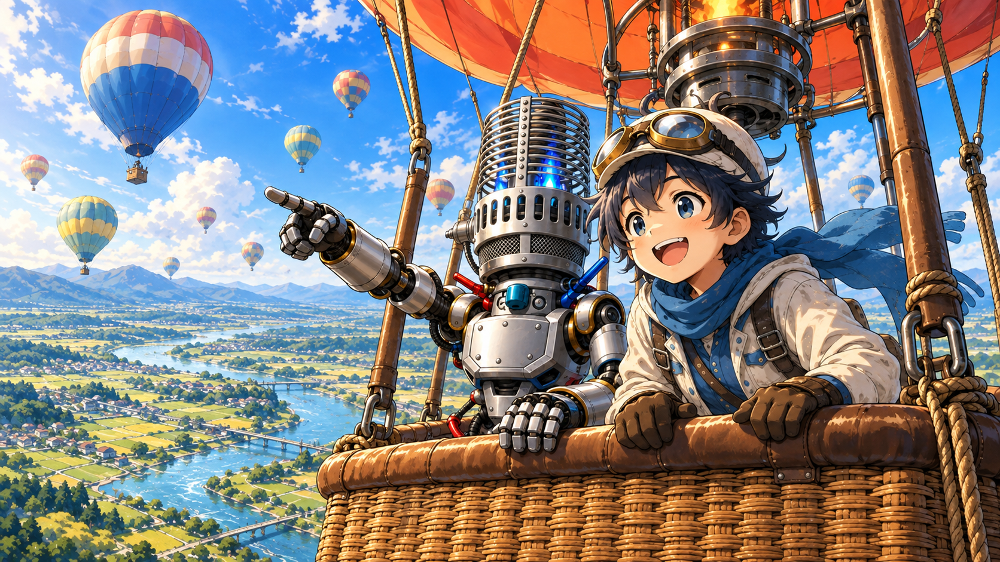
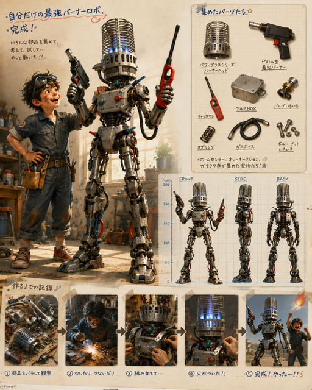

夢は世界チャンピオン
ソラくん
熱気球が大好きな子供。いつか世界チャンピオンになるのが夢。自分で作った相棒と、今日も空のふしぎを探しにいく。
ソラくんと、いっしょに空へ。
ハンドルのない気球、どうやって飛ばす？
ソラくんとバーナーロボが案内する、
はじめての熱気球ゲーム。
いつか、世界チャンピオンに！
きみも一緒に飛ぼうよ！
MEET THE CREW
熱気球が大好きな子供。いつか世界チャンピオンになるのが夢。自分で作った相棒と、今日も空のふしぎを探しにいく。

ソラくんの冒険を支える、手作りの相棒。「どうして？」を一緒に考えながら、気球の飛ばし方を教えてくれる。
LET’S FLY!
まずはこの3つ。むずかしい言葉は、あとからで大丈夫。
最初に覚えるのは、上下の操作。
よーし、出発！
でも、どうしたら上に行けるの？
バーナーで気球の中の空気をあたためるんだ。PCなら Space を長押し。スマホならバーナーボタンを押してね。
あれ？ 押した瞬間には上がらないんだ！
反応には少し時間がかかるよ。目指す高さの手前で離して、昇降の計器を見よう。熱を抜きたいときは R を長押しだ。

右へ、左へ。ハンドルの代わりに。
ターゲットはあっち！
気球を右に曲げるには、どうするの？
熱気球には舵がないんだ。高さによって向きや速さが違う風を探して、乗り換えるんだよ。
なるほど！ 高さを選ぶことが、行き先を選ぶことなんだね。
P で開く「パイバル表」は、高度ごとの風の観測表。風向は「どこから吹いてくるか」。北風なら、南へ流れるよ。
目指すのは、地面のオレンジ色のX。
ターゲットが見えてきた！
あの場所に着陸すればいいの？
この競技では、マーカーを落として、ターゲットにどれだけ近づけるかを競うよ。投下は M。使えるのは1本だ。
それなら、真上で落とせばぴったり……？
マーカーも落ちている間に風で流されるんだ。高さと風を見てタイミングを考えよう。着地点とターゲットの距離が結果になるよ。
PILOT’S NOTE
画面右下のボタンを使います。🔥 はバーナー、RIP は排熱。どちらも長押しで操作します。
📍 はマーカー投下、👁 は視点切替、×1 は時間加速、P はパイバル表。ドラッグで視点を回し、ピンチでズームできます。
最初は時間加速を ×1 にして、景色と計器をゆっくり見てみよう！
画面上部の大きな高度表示を押すと、詳しい計器が開きます。
「本格モード」では、エリアを選び、タスクブリーフィングで風の表を確認し、地図をクリックして離陸地点を決めます。ターゲットの風上側からの出発を考えてみましょう。
本格モードへ ↗住所検索でも場所を選べます。検索結果は大まかな位置の場合があるので、地図で確認してください。
SORAの「本格モード」→「開発途中版」で、離陸前に「地上クルーあり」を選べます。白は気球を追い、青は目標付近へ先行・待機します。C または無線パネルで、現在地の地上風を問い合わせられます。
SORAの開発途中版を開く ↗
ふたりのはじまり
「一緒に飛べる相棒がいたらなあ。」
ソラくんが作ったのが、バーナーロボ。
わからないことを見つけて、考えて、また試す。
世界チャンピオンへの道も、きっとその繰り返し。
次のフライトは、きみも一緒に。
SORAで空へ出発する ↗